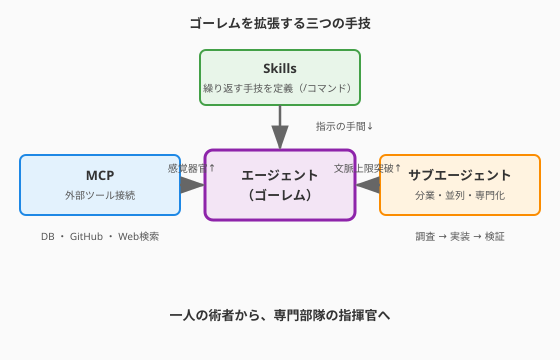

3.9 【外伝】手技の工房——Skills・MCP・サブエージェントでゴーレムを拡張する

3.5節で、あなたはコーディングエージェント（ゴーレム）を召喚し、使役する術を学びました。しかし、そのゴーレムはまだ「生まれたまま」の状態です。
真の錬金術師は、ゴーレムを改造します。
繰り返す作業を「手技（スキル）」として定義し、呪文の一言で再現できるようにする。外の世界の情報源を「道具（MCP）」としてゴーレムに装備させ、データベースや外部APIを直接参照させる。さらにゴーレム同士を組み合わせて「群れ（マルチエージェント）」を形成し、並列に複雑な仕事を遂行させる——これが、AI時代の上位魔術です。
次の図は、Skills（スキル定義）・MCP（外部ツール接続）・サブエージェント（ゴーレムの連鎖）という三つの拡張技術が、単体のエージェントをどのように強化するかを示しています。

ここで描かれているのは、一体のゴーレムが持つ能力の限界を、三つの方向から拡張する構造です。Skillsは繰り返す作業をMarkdownで定義して召喚コスト（指示の手間）を下げ、MCPはファイルシステムを超えてDBや外部APIへと感覚器官を伸ばし、サブエージェントは分業によってコンテキスト上限を突破します。この三者が組み合わさることで、エンジニアは一人の術者から専門部隊の指揮官へと変貌を遂げます。
Skills——繰り返す手技を呪文集に刻む
三つの拡張技術のうち、最も手軽に始められるのがSkillsです。まずその概念を掴みましょう。
概念: 短縮詠唱の書
スキルとは「繰り返し行う作業を、一つの短縮詠唱として定義したもの」です。3.5節でスラッシュコマンド（/commit、/review-pr など）を紹介しましたが、あれはあくまでツールが提供する「既製品の呪文」でした。
スキルは、それを自分で定義できる仕組みです。
Claude Codeでの実装
概念を理解したら、Claude Codeでどのように定義するかを具体的に見ていきましょう。.claude/commands/ フォルダにMarkdownファイルを置くと、そのファイル名がそのままカスタムスラッシュコマンドになります。
# .claude/commands/security-review.md
# 使い方: /security-review
infrastructure/ と .github/workflows/ を読んで、
セキュリティレビューを実施してください。
OWASP Top 10を参考に、以下の点をチェックしてください：
- SQLインジェクション・XSSの可能性
- 認証・認可の不備
- シークレットのハードコーディング
問題点を優先度順にリスト化し、修正案をコードで示してください。これを定義すれば、今後チームの誰もが /security-review と入力するだけで、この複雑な手順が毎回同じ品質で実行されます。
QuestForge プロジェクトのスキル集の例
一つのスキルがどれほど実務を変えるかが伝わったところで、プロジェクト全体でどのようなスキルが揃うかをイメージしてみましょう。
| スキル名 | 概要 |
|---|---|
/commit |
変更を論理単位ごとにグループ分けしてコミット |
/security-review |
OWASP観点でのセキュリティレビュー |
/add-tests |
指定ファイルの網羅的なテストを自動生成 |
/update-docs |
コードの変更に合わせてドキュメントを更新 |
/estimate-complexity |
メトリクスを分析して改修工数を試算 |
スキルはMarkdownファイルなのでGitで管理でき、チームで共有できます。「今日から入ったメンバーも、ベテランと同じ品質でセキュリティレビューができる」——それがスキルの力です。
他のツールとの対応
QuestForgeでの例が揃ったら、この思想が他のツールではどのように実現されているかも確認しておきましょう。スキルの概念はClaude Code固有ではありません。エージェントが変わっても「繰り返す手技を定義して再利用する」という思想は共通です。
| ツール | スキル定義の場所 |
|---|---|
| Claude Code | .claude/commands/*.md |
| Cursor / Windsurf | .cursorrules + カスタムスラッシュコマンド |
| GitHub Copilot | .github/copilot-instructions.md |
| 汎用スクリプト | シェルスクリプト・Makefile |
MCP（Model Context Protocol）——道具の召喚儀式
概念: ゴーレムの「感覚器官」を拡張する
Skillsでゴーレムへの指示を効率化できたら、次はゴーレムの「見える世界」そのものを広げる技術——MCPに目を向けましょう。MCPとは「AIエージェントが外部ツールやデータソースに接続するための標準プロトコル」です。2024年にAnthropicが策定・公開し、急速に普及しています。
MCPが登場する以前、AIエージェントの「見える世界」はプロジェクトのファイルシステムに限られていました。MCPにより、ゴーレムはデータベース、外部API、ブラウザ、クラウドサービスなど、あらゆるものに目と手を伸ばせるようになります。
エージェント（Claude Code）
↕ MCP Protocol
MCPサーバー（仲介役）
↕ 各種インターフェース
┌──────────────────────────────────┐
│ DB │ GitHub │ Web検索 │ ブラウザ │ ...│
└──────────────────────────────────┘代表的なMCPサーバー
MCPの仕組みが分かれば、どんなサーバーが用意されているかを知ることで可能性が一気に広がります。
| MCPサーバー | できること |
|---|---|
filesystem |
ローカルファイルの読み書き（エージェントの基本装備） |
github |
PRの作成・レビュー・Issue管理・コード検索 |
postgres |
DBへの直接クエリと結果の取得・加工 |
brave-search |
Web検索で最新情報やドキュメントを取得 |
puppeteer |
ブラウザ操作（E2Eテストや画面確認） |
slack |
Slackチャンネルへのメッセージ送受信 |
QuestForgeでの活用例
サーバーの一覧が揃ったところで、QuestForgeに当てはめた具体的な活用イメージを見ておきましょう。QuestForgeのPostgreSQLデータベースにMCPで接続すると、このような自然な対話が可能になります。
「先月完了されたクエストの件数と平均報酬XPを集計して、
それを踏まえてcalculate_quest_xp()のロジックを見直してください」エージェントは自ら DBに接続し、実データを集計した上でコードを改善します。「仮想の例」ではなく「実際のデータ」に基づいた改善——それがMCPで広がる世界です。
MCPサーバーの追加方法
活用のイメージが掴めたら、実際にMCPサーバーを追加する手順を確認しておきましょう。Claude Codeでは、claude_desktop_config.json（またはプロジェクトの設定ファイル）にサーバーを登録します。
{
"mcpServers": {
"questforge-db": {
"command": "uvx",
"args": ["mcp-server-postgres", "postgresql://localhost/questforge"]
},
"github": {
"command": "uvx",
"args": ["mcp-server-github"],
"env": { "GITHUB_TOKEN": "..." }
}
}
}一度設定すれば、エージェントが自動的に「この会話でどのツールを使うべきか」を判断して呼び出します。
サブエージェント——使い魔の連鎖
概念: 一匹から、群れへ
SkillsとMCPで一体のゴーレムを強化できたら、いよいよ最後の拡張——ゴーレムを「群れ」として組織するサブエージェントへと進みましょう。サブエージェントとは「エージェントが、別のエージェントに仕事を委譲する」仕組みです。複雑なタスクを分解し、専門化したエージェントに並列・直列で処理させます。
単一のエージェントには限界があります——コンテキスト（記憶）の上限、一度に処理できる量、専門性の制約。それを突破するのがサブエージェントです。
構成のパターン
「一匹から群れへ」という概念を掴んだら、その群れをどのように組織するか——構成のパターンを見ていきましょう。
【直列パターン（調査→実装→検証）】
メイン → 調査エージェント → 設計エージェント → 実装エージェント
↓
テストエージェント
【並列パターン（同時多発）】
メイン ─── セキュリティ調査エージェント ───┐
├── パフォーマンス分析エージェント ───┤→ 統合・レポート
└── テスト生成エージェント ─┘Claude Codeでの実践例
パターンの形が見えたら、Claude Codeを使った実際の指示の姿を見てみましょう。「大規模なリファクタリング」のようなタスクをサブエージェントで分解すると、以下のように指示できます。
このプロジェクトを3つのエージェントで並列に分析してください：
エージェント1: domain/ と application/ のアーキテクチャを分析し、
Clean Architecture違反を列挙してください
エージェント2: tests/ 全体のカバレッジと抜け漏れを分析してください
エージェント3: infrastructure/ のセキュリティリスクを評価してください
3つの分析結果を統合し、優先度付きの改善計画を作成してください。Claude Codeはこれを受け取り、内部でサブエージェント（Agentツール）を起動して並列処理し、結果を統合します。
コンテキストの節約という設計思想
並列処理によるスピードアップだけでなく、サブエージェントにはもう一つ見落とされがちな設計上の利点があります。各サブエージェントは独立したコンテキストを持ちます。巨大なコードベースを一つのエージェントに丸ごと読み込ませるのではなく、「担当領域だけを深く読む」エージェントを複数立てることで、精度が上がり、コストも下がります。
まとめ
Skills・MCP・サブエージェントの三つは、一体のゴーレムを「部隊」へと育て上げるための技術です。Skillsは繰り返す手技をMarkdownで定義してスラッシュコマンドとして再利用可能にし、チームで共有すれば全員の作業品質が均一に向上します。MCPは外部ツールやデータソースをプロトコルで接続することでAIの「見える世界」を広げ、DBや外部APIをエージェントが直接参照・操作できるようにします。
サブエージェントは複雑なタスクを専門部隊に分解・委譲する仕組みであり、並列実行でスピードを、専門化で精度を高めます。この三つを組み合わせると、エンジニアは「コードを書く人」から「AIの部隊を指揮する指揮官」へと役割が進化します。それは喪失ではなく、人間がより高次の設計・判断・評価に集中できるという解放です。
こうして第3章では、アルゴリズムの元素から制御構造・器の設計・品質評価・AIとの協働・パラダイムの多様性・並行処理・そしてレガシーとエージェント拡張まで、「術式を磨く」全技術を巡ってきました。続く第4章「無敵の軍団を作る」では、視点をコードの外に広げます。あなたの術式を守り、証明し、自動的に検証し続けるテストという「守護魔法」の体系を学んでいきましょう。
AIへの詠唱例
スキルの定義（Claude Code）
.claude/commands/add-tests.md を作成してください。
このスキルは「指定されたPythonファイルの関数を読んで、
pytestを使った包括的なテストを自動生成する」ものです。
内容として以下を含めてください：
- 対象ファイルを引数として受け取る方法（$ARGUMENTS の利用）
- 正常系・異常系・境界値のテストケースを網羅する指示
- テスト実行まで行うか、ファイル作成にとどめるかの選択MCPサーバーの活用
MCPのgithubサーバーを使って、以下を行ってください：
1. このリポジトリのオープンなPull Requestを一覧取得
2. 最も古いPR（draft除く）のdiffを取得
3. セキュリティ・パフォーマンス・コードスタイルの観点でレビューコメントを作成
4. コメントをPRに投稿してくださいサブエージェントによる並列分析
以下の3つのタスクをサブエージェントで並列に実行してください：
1. sample-code/questforge/domain/ を分析して、
SOLID原則の違反箇所を列挙する（最大5件）
2. sample-code/questforge/tests/ を分析して、
テストが不足している重要なシナリオを3つ特定する
3. sample-code/questforge/infrastructure/ を分析して、
セキュリティ上の懸念点を優先度付きで挙げる
3つの結果をまとめ、「今週取り組むべき改善タスク」として
優先度・工数・期待効果の表を作成してください。さらに学ぶためのリソース
- 🌐 公式ドキュメント: Model Context Protocol（MCPの仕様・サーバー一覧・実装ガイド。急速に拡充中）
- 🌐 公式ドキュメント: Claude Code スラッシュコマンド（カスタムスキルの定義方法の公式ガイド）
- 🌐 Web: MCP Servers（GitHub）（Anthropicが管理する公式MCPサーバー集。filesystem・github・postgres等のリファレンス実装）